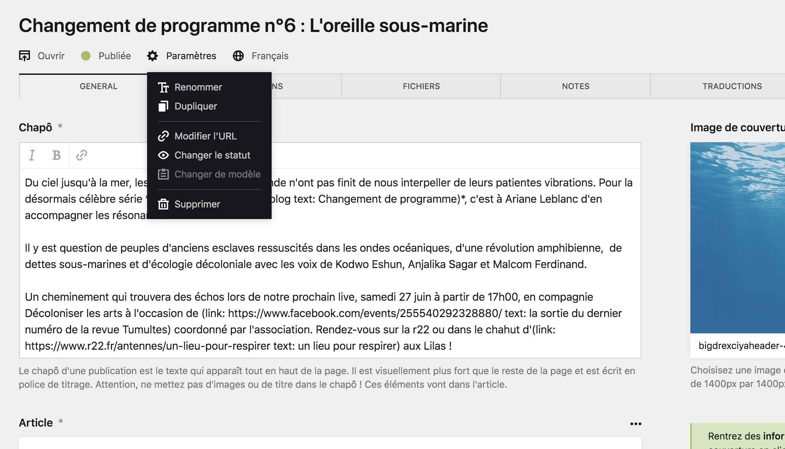
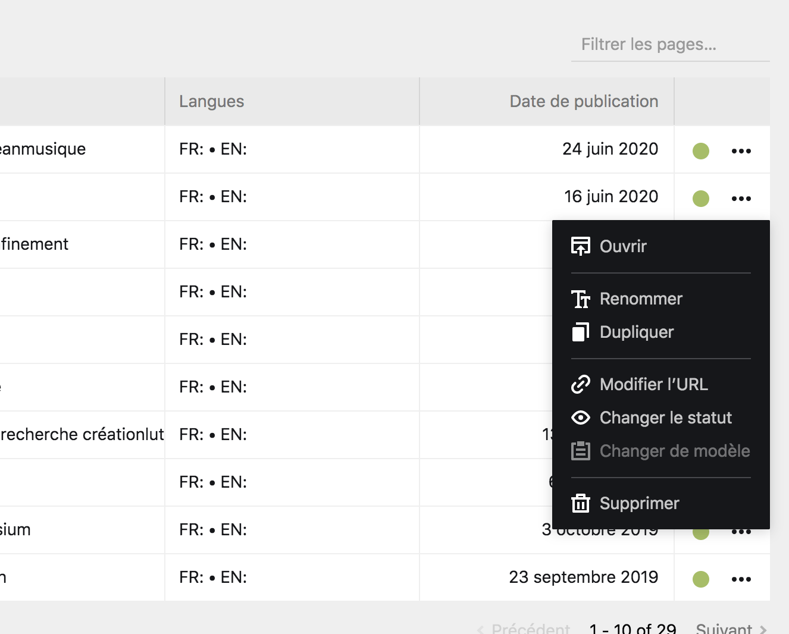
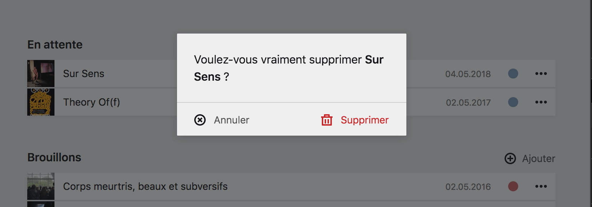

Paramètres des pages et suppression #
Chaque page possède plusieurs informations essentielles, qui sont la plupart du temps décidées par avance ou à sa création. Vous pouvez modifer ces informations au besoin dans les paramètres de la page.
Les paramètres #
Les paramètres sont accessibles soit :
- Depuis la barre d’outil de la page, en haut à droite, sous son titre.
- Depuis le bouton
…dans les sections de pages, situé le plus souvent à gauche de la boîte de page, ou en dessous de la carte de page.


Liste des paramètres #
| Paramètre | Description |
|---|---|
| Ouvrir | Ce bouton est accessible depuis les sections de pages, et vous permet d’ouvrir la page du Panel correspondant à cette page du site. |
| Renommer | Cette option vous permet de changer le titre d’une page. |
| Dupliquer | Cette option vous permet de créer une copie conforme de la page en lui donnant un nouveau titre et un nouvel identifiant. |
| Modifier l’URL | Cette option vous permet de changer l’identifiant de la page, et ainsi de modifier son URL au sein du site. |
| Changer le statut | Cette option vous permet de
changer le statut d’une page, entre Brouillon, Non listée ou Publiée. |
| Changer le modèle | Vous pouvez changer le template, ou modèle d’une page. Cette option est inaccessible par défaut dans le Panel pour le site d’INACT, car les modèles sont toujours uniques. |
| Supprimer | Ce bouton vous permet de supprimer la page, son contenu et éventuellement ces sous-pages. C’est une action qui n’est pas à prendre à la légère car il n’est pas possible de récupérer du contenu supprimé |
Supprimer une page #
Pour supprimer une page, cliquez sur le bouton suprimmer dans les Paramètres de le page.
Une boîte modale d’information vous demandera, par précaution, de confirmer votre choix et la suppression de la page.
Si la page possède des sous-pages, la boîte modale vous demandera d’écrire le nom de la page pour confirmer votre choix, et ainsi éviter des erreurs potentiellement désastreuses pour le site.
